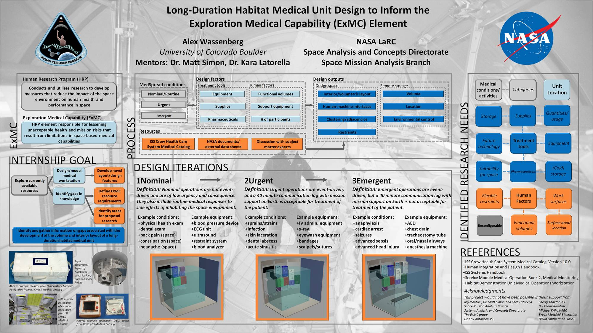
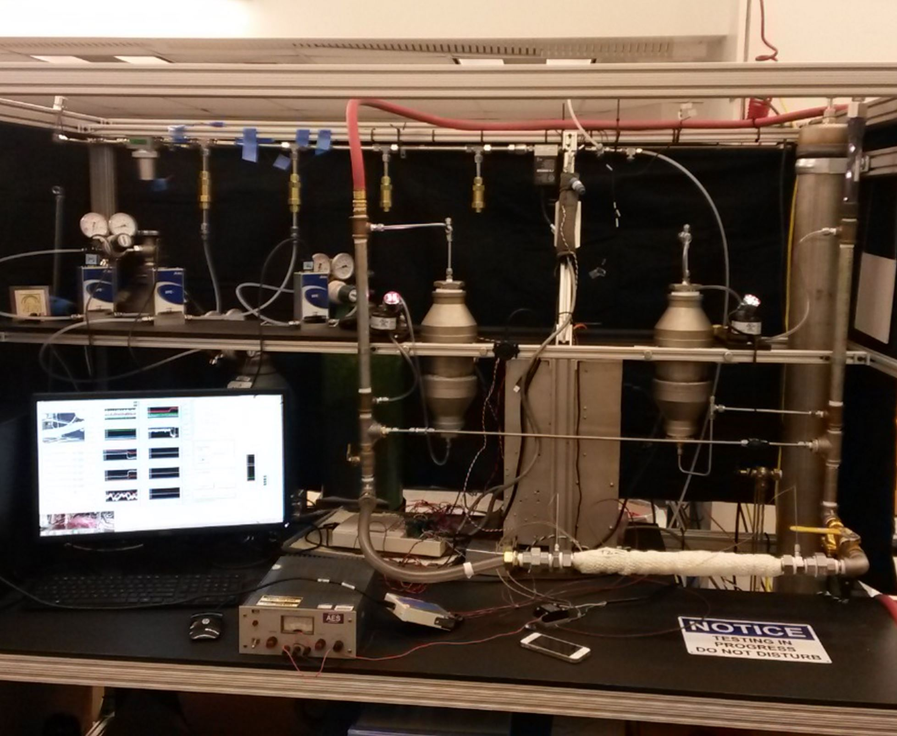
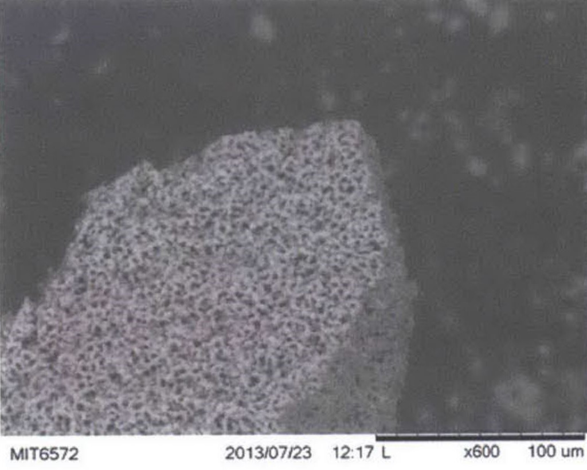

{kind=link}
contact
alex.wassenberg@colorado.edu | 571.245.5662
Long-Duration Habitat Medical Unit
 Worked in a team of 14 students to design and construct a reduced-scale prototype Martian greenhouse sponsored by the NASA eXploration Habitat Academic Innovation Challenge. The greenhouse was designed to be closed system that would autonomously monitor and control plant growth through the regulation of lighting, nutrient and water provision, and atmospheric composition. Worked in a team of 14 students to design and construct a reduced-scale prototype Martian greenhouse sponsored by the NASA eXploration Habitat Academic Innovation Challenge. The greenhouse would be a closed system and autonomously monitor and control plant growth through the regulation of lighting, nutrient and water provision, and atmospheric composition.
Silica Gel Regeneration Cycling for Habitat Humidity Control
 Worked in a team of 14 students to design and construct a reduced-scale prototype Martian greenhouse sponsored by the NASA eXploration Habitat Academic Innovation Challenge. The greenhouse would be a closed system and autonomously monitor and control plant growth through the regulation of lighting, nutrient and water provision, and atmospheric composition. Worked in a team of 14 students to design and construct a reduced-scale prototype Martian greenhouse sponsored by the NASA eXploration Habitat Academic Innovation Challenge. The greenhouse would be a closed system and autonomously monitor and control plant growth through the regulation of lighting, nutrient and water provision, and atmospheric composition.
Electrode Development for Ion Electrospray Propulsion Systems
 Worked in a team of 14 students to design and construct a reduced-scale prototype Martian greenhouse sponsored by the NASA eXploration Habitat Academic Innovation Challenge. The greenhouse would be a closed system and autonomously monitor and control plant growth through the regulation of lighting, nutrient and water provision, and atmospheric composition. Worked in a team of 14 students to design and construct a reduced-scale prototype Martian greenhouse sponsored by the NASA eXploration Habitat Academic Innovation Challenge. The greenhouse would be a closed system and autonomously monitor and control plant growth through the regulation of lighting, nutrient and water provision, and atmospheric composition.
alex.wassenberg@colorado.edu | 571.245.5662